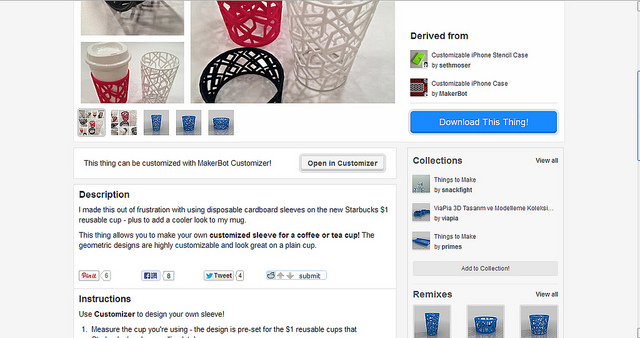

2013-08-15
科技產品越來越多樣化，也越來越普遍，3D列印機(3D printer)、自動裁紙機(Automatic papar cutter)、雷射切割機(laser cutter)、電腦數位機床(CNC machine)等都更容易被取得，也就越來越多人開始使用這些設備來自行創造有用而新奇的小物品。
不過，當人們了解3D列印機的功能後，最常問的問題就是「為什麼你需要一個這樣的機器？」就算機器再好用、再普及，也需要先有數位設計才能讓這些機器發揮作用，因此就有了Thingiverse這個解決之道。
Thingiverse是一個分享平台，匯集各地可以實踐成真實產品的數位設計藍圖。創作者在此提供3D列印機讀取的3D檔案、供雷射切割機使用的向量檔案、說明製作流程的PDF檔案等，其他人要是有興趣，就可以一次打包所有相關檔案，複製或是改造出屬於自己的實體成品。
Thingiverse附屬於開放資源3D列印機MakerBot公司，這個公司由Adam Mayer、Smith aka Hoeken和Joris Peels成立，比起另一個知名的開放資源3D列印機RepRap，他們設計的MakerBot能更快速的組裝，但同樣都是開放資源，讓使用者可以協助改進3D列印機的效能。
雖然，Joris Peels預估這樣的東西大概再十年後才會變的普遍，但是他們現在的消費者其實不只有科技玩家、工程師、設計師，也有一些想要自己動手做一些東西、快速解決生活小問題的一般人，令人驚喜的是，有不少學生藉此發揮創意，年紀輕輕就能做出許多意想不到的成品。
Thingiverse時常會舉辦競賽，參賽者要根據挑戰主題及規則將設計的作品放在網站上，鼓勵他人使用自己的設計，最後的贏家會有獎品，並在部落格上專門介紹，以促使更多人一起來發揮3D列印機的潛力。
在這個平台上，創作者要根據創用CC或GNU來授權，但是不同的人可以選擇不同的授權方式，因此在使用不同人的設計時，都要特別留意，有些可能連名字都不需要標注，有些則需要同時遵守創用CC的四個條件。
為了方便使用者記憶以及增加標示出創作者的意願，最近，Thingiverse將創作者whosawhatsis設計的Thingitag發揚光大，Thingitag上有授權方式、作品作者名稱、發布日期和連結網址QR碼，在Thingiverse的網頁上可以很方便而迅速的點擊列印。
Thingiverse除了在授權標誌上讓創作者很自由、讓使用者很放心之外，值得一提的是，它清楚展現了每個設計的來龍去脈。創作者可以說明自己設計的點子來自於平台上的哪些設計，使用者則可以表態他喜不喜歡、想不想收藏，以及他做出來的成品或是改造之後的會是什麼樣子。
這個網站背後的夢想是，希望到了人人都有一台3D列印機的那一天，他們會來到這個平台，找到對他們而言很有用、很有趣、很酷的東西，下載、列印，只要花個幾分鐘，就能快速拿到實體物品。
延伸閱讀 : http://opendesignnow.org/index.php/case/thingiverse-zach-smith/
備註：
MakerBot連結失效